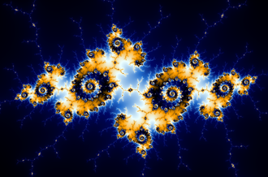
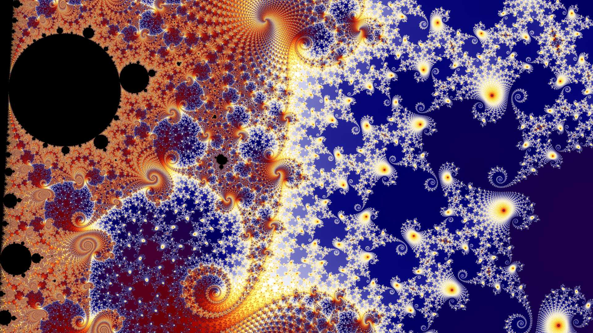

The Mandelbrot set (/ˈmændəlbrɒt/) is the set of complex numbers c for which the function fc(z)=z^{2}+c does not diverge to infinity when iterated from z=0, i.e., for which the sequence fc(0), fc(fc(0)), etc., remains bounded in absolute value. Its definition is credited to Adrien Douady who named it in tribute to the mathematician Benoit Mandelbrot, a pioneer of fractal geometry.
Images of the Mandelbrot set exhibit an elaborate and infinitely complicated boundary that reveals progressively ever-finer recursive detail at increasing magnifications, making the boundary of the Mandelbrot set a fractal curve. The "style" of this repeating detail depends on the region of the set being examined. Mandelbrot set images may be created by sampling the complex numbers and testing, for each sample point c, whether the sequence fc(0),fc(fc(0)),... goes to infinity. Treating the real and imaginary parts of c as image coordinates on the complex plane, pixels may then be coloured according to how soon the sequence |fc(0)|,|fc(fc(0))|,... crosses an arbitrarily chosen threshold (the threshold has to be at least 2, but is otherwise arbitrary). If c is held constant and the initial value of z is varied instead, one obtains the corresponding Julia set for the point c.
The Mandelbrot set has become popular outside mathematics both for its aesthetic appeal and as an example of a complex structure arising from the application of simple rules. It is one of the best-known examples of mathematical visualization, mathematical beauty, and motif.
 The Mandelbrot set has its origin in complex dynamics, a field first investigated by the French mathematicians Pierre Fatou and Gaston Julia at the beginning of the 20th century. This fractal was first defined and drawn in 1978 by Robert W. Brooks and Peter Matelski as part of a study of Kleinian groups. On 1 March 1980, at IBM's Thomas J. Watson Research Center in Yorktown Heights, New York, Benoit Mandelbrot first saw a visualization of the set.
Mandelbrot studied the parameter space of quadratic polynomials in an article that appeared in 1980. The mathematical study of the Mandelbrot set really began with work by the mathematicians Adrien Douady and John H. Hubbard (1985),who established many of its fundamental properties and named the set in honor of Mandelbrot for his influential work in fractal geometry.
The mathematicians Heinz-Otto Peitgen and Peter Richter became well known for promoting the set with photographs, books (1986),and an internationally touring exhibit of the German Goethe-Institut (1985).
The cover article of the August 1985 Scientific American introduced a wide audience to the algorithm for computing the Mandelbrot set. The cover featured an image located at −0.909 + −0.275 i and was created by Peitgen et al.The Mandelbrot set became prominent in the mid-1980s as a computer graphics demo, when personal computers became powerful enough to plot and display the set in high resolution.
The work of Douady and Hubbard coincided with a huge increase in interest in complex dynamics and abstract mathematics, and the study of the Mandelbrot set has been a centerpiece of this field ever since. An exhaustive list of all who have contributed to the understanding of this set since then is long but would include Jean-Christophe Yoccoz, Mitsuhiro Shishikura, Curt McMullen, John Milnor and Mikhail Lyubich.